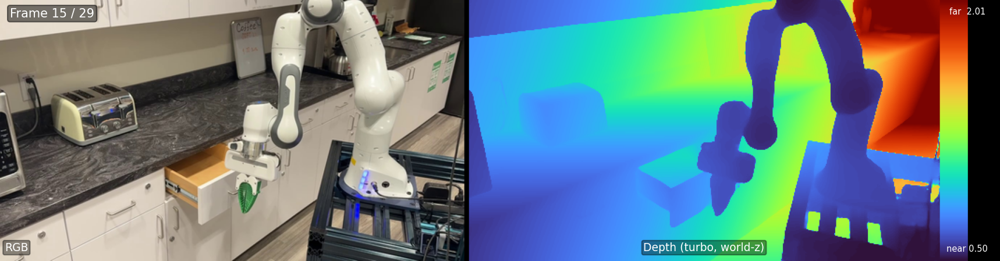

robot_arm ExampleOutput of python inference.py --input examples/robot_arm --save result.npz
run verbatim from the 4RC repo. Validates our bring-up produces the same canonical result
as the paper demo. For the DexYCB application, see the sibling
2026-04-21-4rc-dexycb-smoke page.
Left panel: original RGB (1280×720 → 504×280). Right panel: depth heatmap (turbo colormap, world-frame z, global p2/p98 clip for temporal stability). Colorbar: near=0.50 m (bottom), far=2.01 m (top).

| Key pattern | Shape | Dtype | Notes |
|---|---|---|---|
| pred_i_pts | (1, 280, 504, 3) | float32 | world-frame 3D points; z = camera-frame depth |
| pred_i_conf | (1, 280, 504) | float32 | pixel confidence |
| pred_i_track | (1, 280, 504, 3) | float32 | track head output |
| pred_i_conf_track | (1, 280, 504) | float32 | track confidence |
| pred_i_track_multi | (1, 1, 280, 504, 3) | float32 | multi-query track |
| pred_i_conf_track_multi | (1, 1, 280, 504) | float32 | multi-query conf |
| pred_i_extrinsic | (4, 4) | float32 | c2w; translations <0.014 (near-identity) |
| pred_i_intrinsic | (3, 3) | float32 | camera intrinsics |
| view_i_img | (1, 3, 280, 504) | float32 | normalised input frame |
| n_frames | scalar | int64 | 30 |
| Percentile | Value (m) |
|---|---|
| global p2 | 0.4992 |
| global p50 | 0.8288 |
| global p98 | 2.0133 |
| absolute min | 0.3889 |
| absolute max | 2.2148 |